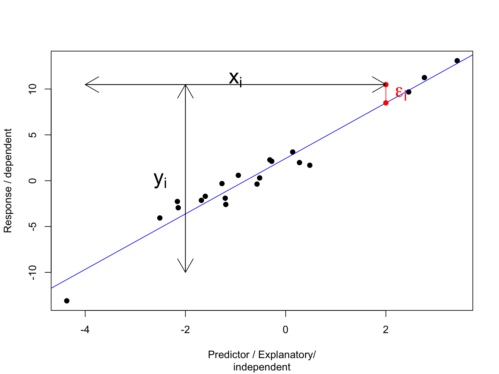

Introduction
Radchuk Viktoriia
2022-12-19
Orga / Admin
We will meet between 10:00 and 15:00 in two sessions:
- 10:00 - 11:50, - morning session
- 13:10 - 15:00, - afternoon session.
Both the morning and the afternoon sessions will consist of a lecture
and a practical exercise (each ~45 minutes).
The practical exercise will be either guided by me or to be performed by
you and we check the solution together afterwards.
Contents of the course
Day 1:
- Recap of linear model, diagnostics and inference
- Intro to linear mixed-effects model
- Random intercept and random slope models
Day 2:
- Model diagnostics for mixed-effects models
- Model inference, hypothesis testing
- More complex random structures: temporal autocorrelation,
non-Gaussian family
- a teaser on multivariate stats
Contents of the course
Day 3:
- Working on your own data / the data supplied by me
- Clarifying the remaining questions
Linear model
Repetition is the mother of all skill
Graphical representation
Linear model can be depicted by a line that describes a functional relationship between at least two variables
- a predictor / explanatory / independent variable
- and a response / dependent variable

Mathematical representation
\(y = \alpha + \beta\times x +
\epsilon\), \(\epsilon \sim N(0,
\sigma^2)\)
\(\alpha\) is intercept, i.e. the
value of the response variable when the predictor = 0,
\(\beta\) is slope, i.e. by how much the response variable is increasing per each unit of the predictor

Predicting a value
\(y_i = \alpha + \beta\times x_i + \epsilon_i\);
\(\epsilon_i \sim N(0, \sigma^2)\)

Assumtions of a linear model
- Normal distribution of residuals
in fact: normality of residuals at each X value - Additive error model That means that errors cannot be related to the predictor variable in any other way than additive. In other words, the below models violate this assumption: \[y = \alpha + \beta\times x \times \epsilon\] \[y = \alpha + \beta\times x^\epsilon\]
Assumtions of a linear model
- iid: residuals are independent, identically distributed. No correlation between residuals, e.g. due to autocorrelation \(Cov(\epsilon_i, \epsilon_j) = 0\)
- Homoscedasticity: homogeneity of the variance of residuals

Before we go to an exercise and fit a linear model in R
Repetition is the mother of all skill
Data types in R
R deals with objects.
R has 6 basic data types:
- character: “F”, “M”;
- numeric (real or decimal): 1, 13.4;
- integer: 9L;
- logical: FALSE, TRUE;
- complex: 2+3i;
- raw.
How can you check in R what is the type of the variable?
Data structures in R
- atomic vector
- list
A vector is an ordered collection of basic data types.
Atomic vectors must have all elements of the same type. E.g. there can
be numeric, logical or character vectors.
Lists are also vectors but they can have elements of different data
types.
## [1] 105 1 3## [1] TRUE TRUE FALSE## [1] "a" "b" "d"Vectors & lists
## [1] "integer"## [1] "logical"## [1] "character"## [[1]]
## [1] "d"
##
## [[2]]
## [1] 5 6 7 8 9
##
## [[3]]
## [1] TRUE TRUE TRUE
##
## [[4]]
## [1] 0.0 10.8Data structures in R
- atomic vector
- list
- matrix
- data frame
- factors
What is the difference between a matrix
and a data frame?
What is the difference between character and
factor?
Why we often have to re-code character into a factor?
Data structures in R
- A matrix is a rectangular arrangement of numbers in rows and
columns. Matrices are two-dimensional structures, that contain data of
the same type. In a matrix, rows run horizontally and columns run
vertically.
- A data frame is used for storing tabular data, so it is a two-dimensional structure. In fact, a data frame is a list of equal-length vectors. So, each column in a data frame is a vector. And these vectors can be of different data types (e.g. character, numeric, logical etc.).
Matrix & data frame
## [,1] [,2]
## [1,] 1 4
## [2,] 2 5
## [3,] 3 6## [1] 3 2## 'data.frame': 5 obs. of 2 variables:
## $ x: int 5 6 7 8 9
## $ y: chr "a" "x" "d" "r" ...Data structures in R
A factor is a vector that stores categorical data with only
predefined values.
If you use a factor instead of a character vector you will quickly see
if some levels have no observations
## [1] F M M
## Levels: F M## [1] "factor"## [1] "F" "F" "F"tidyverse changed the way we are coding in R
- tibble vs data frame
- %>% pipes the output of one function to the next one.
What is the difference between a tibble and a data frame?
Tibbles
Tibbles are ‘improved’ versions of data frames. Two main differences
with data frames are how tiblles are printed and subset.
If printed a tibble displays the data for the first 10 rows and the data
type for each column.
Difference in subsetting: [ always returns another tibble,
[[ always returns a vector.
## # A tibble: 150 × 5
## Sepal.Length Sepal.Width Petal.Length Petal.Width Species
## <dbl> <dbl> <dbl> <dbl> <fct>
## 1 5.1 3.5 1.4 0.2 setosa
## 2 4.9 3 1.4 0.2 setosa
## 3 4.7 3.2 1.3 0.2 setosa
## 4 4.6 3.1 1.5 0.2 setosa
## 5 5 3.6 1.4 0.2 setosa
## 6 5.4 3.9 1.7 0.4 setosa
## 7 4.6 3.4 1.4 0.3 setosa
## 8 5 3.4 1.5 0.2 setosa
## 9 4.4 2.9 1.4 0.2 setosa
## 10 4.9 3.1 1.5 0.1 setosa
## # … with 140 more rowsQuestions?
References
- Faraway JJ (2005) Linear Model with R. Chapman and Hall, New York,
255 p.
- Dalgaard P (2008) Introductory Statistics with R. 2nd ed., Springer,
370 p.
- Wickham H (2017) Advanced R. Chapman and Hall, 2nd ed.